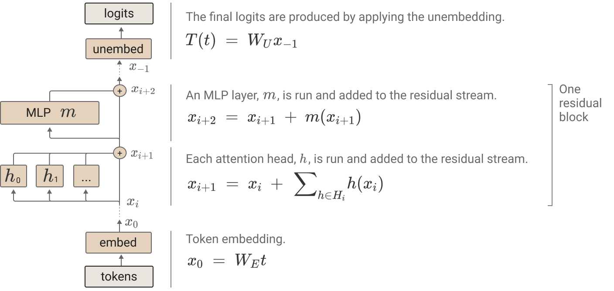
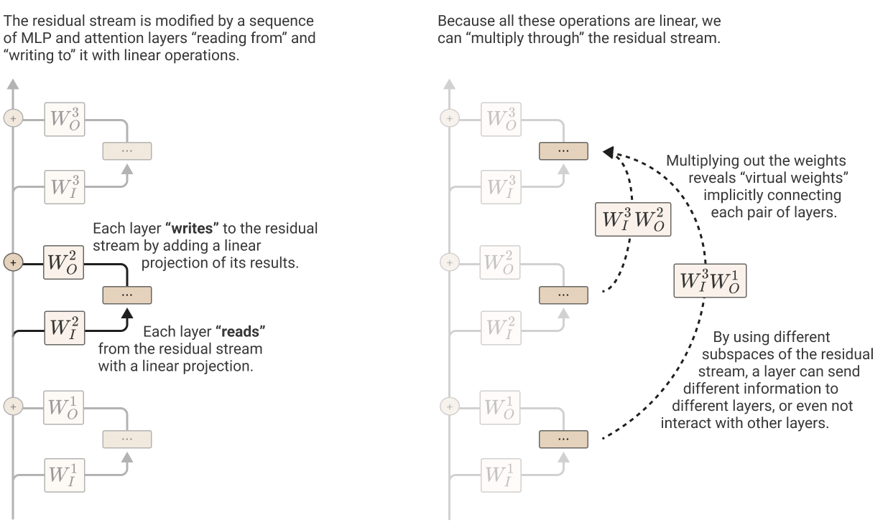

A Mathematical Framework for Transformer Circuits
Transformer가 학습한 가중치를 역설계해 모델 내부의 계산을 설명하는 논문을 읽고 정리했습니다.
원문: transformer-circuits.pub(새 탭에서 열림)
Summary of Results
Reverse Engineering(역설계)은 만들어진 시스템을 분석하여 내부 구조와 작동 원리를 파악하는 과정이다.
이 연구에서는 Transformer가 학습한 Parameter와 Activation을 분석하여 모델이 학습 과정에서 어떤 알고리즘을 익혔는지 확인하고자 한다.
논문에서 말하는 Activation은 활성화 함수가 아니다. Transformer가 입력을 처리하는 과정에서 각 뉴런이나 Attention Head가 어떤 값을 만들어 내고, 그 값이 모델의 최종 예측에 어떻게 기여하는지 살펴본다는 의미다.
- Zero-Layer Transformer: 현재 Token을 기반으로 다음 Token을 예측
- One-Layer Transformer: 이전 Token을 선택적으로 참조하여 다음 예측에 활용
- Two-Layer Transformer: 이전 Layer에서 처리한 정보를 다음 Layer가 재사용하며 새로운 알고리즘 구현
Transformer Overview
본 논문은 가장 명확한 형태로 보여 주기 위해, 몇 가지 단순화된 요소를 적용한 “toy transformers”에 초점을 맞춘다.
일반적인 Transformer에서 사용되는 MLP Layer와 Bias, 그리고 Layer Normalization을 생략했다.
High-Level Architecture
Transformer 언어 모델에는 여러 변형이 있지만, 본 논문에서는 GPT-3와 같은 자기회귀형, 디코더 전용 Transformer 언어 모델에 초점을 맞춘다.

Virtual Weights and the Residual Stream as a Communication Channel
Residual Stream은 각 Layer가 자신의 계산 결과를 누적하고 다른 Layer에 전달하는 벡터 공간이다.
Virtual Weights: 두 Layer 사이에 직접 연결된 Parameter가 저장되어 있지는 않지만, 각각의 Weight를 곱하여 암묵적인 연결을 분석할 수 있다.

Subspaces and Residual Stream Bandwidth
Subspace는 전체 벡터 공간 안에서 특정 방향들로 이루어진 벡터 공간이다.
| 용어 | 뜻 |
|---|---|
| Bandwidth(대역폭) | Residual Stream이 정보를 표현하고 전달할 수 있는 용량 |
| Superposition(중첩 표현) | 여러 Feature가 제한된 차원에서 서로 겹치는 방향으로 표현되는 현상 |
| Bottleneck Activation(병목 활성값) | 더 큰 계산 공간들 사이에서 정보를 전달하는 상대적으로 작은 Activation |
| Privileged Basis(특권적 기저) | 모델의 구조로 인해 특정 좌표축이 특별한 의미를 가지는 기저 |
Residual Stream의 개별 차원이 반드시 하나의 명확한 의미를 가지지는 않는다. 따라서 특정 차원의 값만 관찰하기보다, 정보가 읽히고 기록되는 방향과 계산 경로를 분석하는 것이 중요하다.
Attention Heads as Information Movement
Attention Heads as Information Movement는 논문에서 가장 중요하게 이해해야 하는 수식 중 하나이다.
Attention Head는 단순히 어떤 Token에 주목하는 장치가 아니라, 한 Token 위치에 있는 정보를 다른 Token 위치로 이동시키는 장치다.
원문에서는 Tensor Product(텐서곱)를 이용해 Attention Head 전체를 다음과 같이 표현한다.
\(A\)는 Token 위치 사이의 정보 이동을 담당하고, \(W_{OV}\)는 각각의 Token 벡터에 대한 선형 변환을 담당한다.
Zero-Layer Transformers
Attention Layer와 MLP Layer가 하나도 없는 가장 단순한 Transformer를 의미한다.
Attention Head가 하나도 없어도 Transformer는 다음 Token을 예측할 수 있으며, 이때 모델이 수행하는 계산을 가중치 행렬만으로 분석할 수 있다.
One-Layer Attention-Only Transformers
하나의 Attention Layer가 존재하는 경우
The Path Expansion Trick
Path Expansion(경로 전개)은 Residual Connection을 이용하여 모델의 계산을 가능한 여러 경로의 합으로 전개하는 방법이다.
첫 번째 항은 Direct Path, 두 번째 항은 개별 Attention Head를 경유하는 경로다.
Splitting Attention Head Terms into Query-Key and Output-Value Circuits
QK Circuit: 어디를 참조하는가?
OV Circuit: 무엇을 전달하는가?
논문에서는 QK와 OV를 따로 분석하는 것이 왜 유용한지 설명하기 위해 OV and QK Independence — The Freezing Attention Patterns Trick을 소개한다.
이 기법으로 QK가 결정한 정보 이동 경로를 고정하고, OV가 그 경로를 통해 어떤 정보를 전달하는지 따로 살펴볼 수 있다.
Interpretation as Skip-Trigrams
QK Circuit은 현재 “목적지” Token이 어떤 “소스” Token으로 되돌아가 정보를 복사할지 결정하고, OV Circuit은 다음 Token에 대한 “출력” 예측에 미치는 결과를 설명한다.
Copying / Primitive In-Context Learning
많은 Attention Head가 Copying Behavior를 수행한다. 예를 들어 특정 Head는 다음과 같이 동작한다.
- QK Circuit: 현재 문맥에서 다음에 등장할 법한 과거 Token을 선택
- OV Circuit: 선택된 Token 자체 또는 비슷한 Token의 Logit을 증가
Primarily Positional Attention Heads
Positional Attention Head는 Token의 의미보다는 상대적인 위치에 민감하게 반응하는 Head다. 논문은 이런 Head가 특정 상대적 위치를 강하게 선호하는 경향이 있다고 설명한다.
Skip-Trigram Bugs
One-Layer 모델은 QK와 OV를 분리해서 계산하기 때문에 특정한 종류의 잘못된 조합이 발생할 수 있다.
Factorized Representation(인수분해된 표현)은 효율적이지만, 학습한 관계가 의도하지 않은 방식으로 나올 수 있다.
Two-Layer Attention-Only Transformers
2-Layer Transformer에서는 두 번째 Layer의 Attention Head가 첫 번째 Layer에서 이미 처리된 정보를 읽을 수 있다.
Three Kinds of Composition
Composition(합성)은 앞선 Attention Head가 기록한 정보를 이후 Attention Head가 자신의 계산에 활용하는 것을 의미한다.
- Q-Composition과 K-Composition: Attention Pattern을 생성하는 과정에 영향을 준다.
- V-Composition: Attention Pattern이 고정되어 있을 때 전달할 정보의 내용에 영향을 준다.
Path Expansion of Logits
Two-Layer에서는 4가지 경로로 전개한다.
- Direct × Direct
- Q-Composition
- K-Composition
- QK Cross Term: Q와 K가 모두 첫 번째 Layer의 영향을 받은 경우
Induction Heads
ABCDA처럼 Token이 이어질 때 A 다음에 어떤 Token이 올지 예측하는 데, A와 B 사이의 관계가 반드시 학습 데이터에 있을 필요는 없다.
Two-Layer에서는 Token이 반복될 수 있는 위치를 단순히 찾는 대신, 그 Token이 이전에 어떻게 쓰였는지 보고 유사한 사례를 찾는다. 그래서 이런 경우에 훨씬 더 확신 있는 예측을 할 수 있다.
How Induction Heads Work: 첫 번째 Layer의 Previous Token Head(이전 토큰 헤드)가 각 위치에서 바로 이전 Token을 참조 → Induction Head가 이전 Token을 기준으로 검색(QK Circuit) → Induction Head가 Value를 읽고 예측
Where Does This Leave Us?
이 연구에서 특히 중요한 것은 신경망이 학습한 기능을 단순한 통계적 상관관계가 아니라 구체적인 계산 구조로 설명하려는 접근이다.
toy 모델에서 분석한 Attention Head 및 Circuit과 비슷한 구조가 거대 언어 모델에도 나타나는 것으로 보인다. 그럼에도 큰 모델은 해석할 수 있는 정도가 매우 제한적일 것이다.
개인적인 감상평
가장 인상 깊었던 부분은 Induction Head였다.
개별 Attention Head에 특정 기능을 수행하도록 명시적으로 설계하지 않았음에도, 학습 과정에서 여러 Attention Head가 서로 협력하여 하나의 알고리즘을 구현한다는 점이 흥미로웠다.
특히 단순히 통계적 관계를 학습하는 것에서 나아가, 현재 문맥에서 새로운 관계를 찾아 활용하는 메커니즘이 형성된다는 점에서 모델의 학습을 단순한 Parameter Optimization 이상의 관점으로 바라보게 되었다.
나아가 Transformer를 바라보는 시각에도 변화가 생긴 것 같다. 기존에는 Attention과 MLP로 구성된 하나의 아키텍처로 바라보았다면, 이제는 정보를 읽고, 쓰고, 전달하는 하나의 계산 시스템으로도 생각할 수 있게 되었다.
여러 Attention Head의 연산과 연결 관계를 하나의 작은 Circuit으로 바라보고, 이를 통해 모델이 특정 출력에 도달하기까지의 내부 계산 과정을 해석할 수 있다는 점도 흥미로웠다.
특히 새로운 연산을 추가하는 것이 아닌, 기존의 수식을 다른 관점에서 바라보고 재구성하는 것만으로도 모델 내부의 동작을 해석할 수 있다는 점에서 수학적 이해의 중요성을 다시 한번 체감하게 되었다.